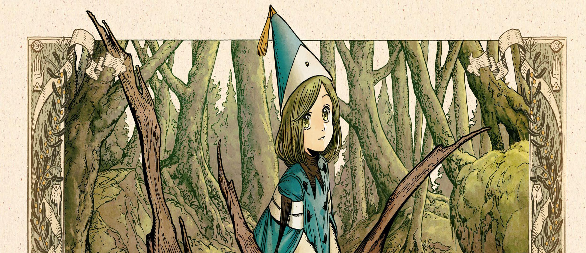
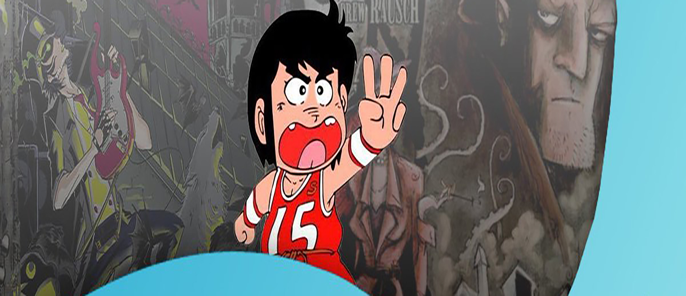
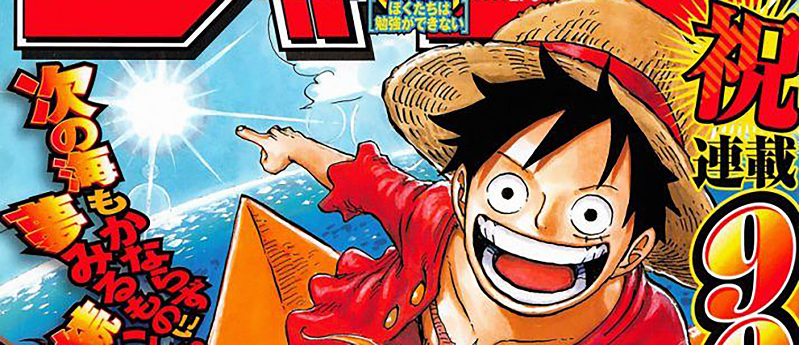
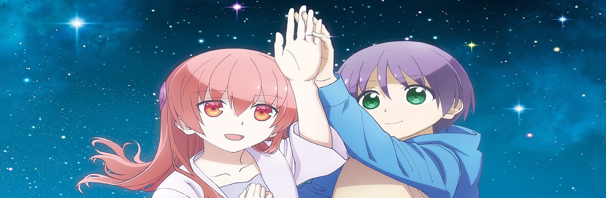

Este mes de abril Kitsune Books en cuanto a manga se refiere hará llegar a las librerías
continuaciones de varias de sus series. Una de ellas es El amor de Mobuko y lo hará por
partida doble, ya que sacará a la venta tanto el tercer como cuarto tomo de esta
entrañable historia de amor de Akane Tamura.

Anunciado el anime de Atelier of Witch Hat
Durante los últimos días Kamome Shirahama ha ido mostrando una cuenta atrás a través de su
cuenta de Twitter que ha acabado este martes 5 de abril. Al final de esta cuenta atrás se
encontraba el anuncio de la decisión de la producción de una adaptación al anime de su
manga Atelier of Witch Hat.

Lanzamientos Kimmo Editorial abril 2022
Este lunes 4 de abril Kimmo Editorial debutaba en el mercado manga español con su primera
publicación. Se trata del primer tomo de Dash Kappei de Noboru Rokuda,

TOC de la Weekly Shônen Jump #18 2022
El lunes se puso a la venta en Japón el número 18 de este año de la revista Weekly Shônen
Jump. El semanario de Shueisha trae en portada a One Piece, cuyo capítulo además contiene
páginas principales a color.

El anime Tonikaku Kawaii volverá
La página web oficial de la adaptación al anime de Tonikaku Kawaii anunció, a través de un vídeo promocional,
que la serie volverá este verano con un nuevo episodio especial titulado «Seifuku». El vídeo muestra nuevas
escenas de la serie y confirma el regreso del reparto y equipo de producción que trabajó en el primer anime.